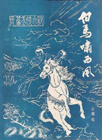

金庸，原名查良镛，1924年3月10日生于浙江省海宁市，1948年移居香港。当代知名武侠小说作家、新闻学家、企业家、政治评论家、社会活动家，“香港四大才子”之一。
1944年考入重庆中央政治大学外交系。1946年秋，金庸进入上海《大公报》任国际电讯翻译。1948年，毕业于上海东吴大学法学院。1952年调入《新晚报》编辑副刊，并写出《绝代佳人》、《兰花花》等电影剧本。1959年，金庸等人于香港创办《明报》。
1985年起，历任香港特别行政区基本法起草委员会委员、政治体制小组负责人之一，基本法咨询委员会执行委员会委员，以及香港特别行政区筹备委员会委员。2000年，获得大紫荆勋章。2009年9月，被聘为中国作协第七届全国委员会名誉副主席。同年荣获2008影响世界华人终身成就奖。2010年，获得剑桥大学哲学博士学位。

《白马啸西风》
描写了哈萨克人和汉人之间的情仇，主人公是一位名叫李文秀的汉族姑娘，父母因带着高昌地图被强盗追迫而死，单独留下李文秀在哈萨克族中被旅居大漠的汉人计老人抚养长大，并与一个哈萨克部族青年的感情故事，字数不长的这样一部小说，里边记述了多组复杂的恋情。
《雪山飞狐》
传说中，明末李闯兵败后，留下了 一批价值连城的巨额宝藏，开启宝藏的秘密被闯王手下胡苗范田四大贴身护卫分别掌握。四姓的后人为了揭开这个秘密，数代间结下无数纠葛情仇...
《飞狐外传》
该书主要是讲述《雪山飞狐》主人公胡斐的成长历程。历史背景是清乾隆年间。
《碧血剑》
本书讲的是明末抗清将领袁崇焕之子袁承志及金蛇郎君夏雪宜的故事。